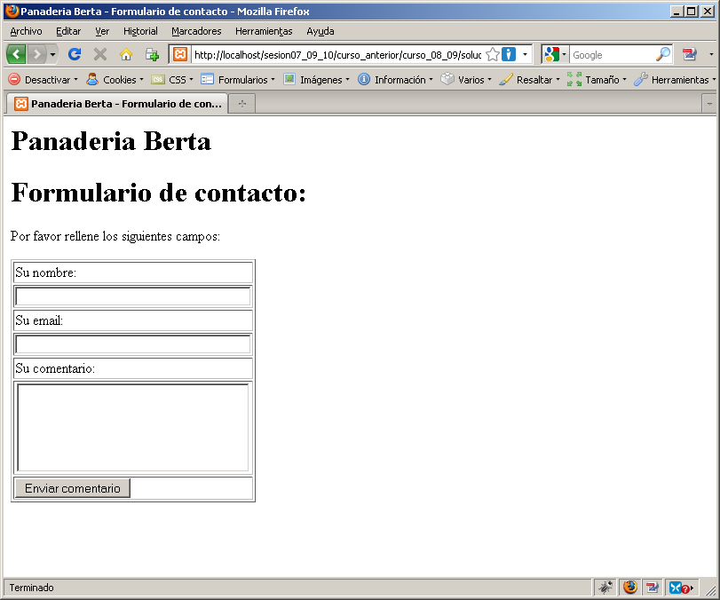
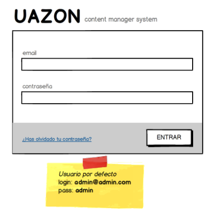

Ejercicios de la sesión de funciones para manejar cadenas y Expresiones regulares
Crea un proyecto sesion07 e introduce en él los diferentes ficheros que vayas creando.
Para la entrega de ejercicios que tengan varios apartados es suficiente con que los primeros estén comentados y el último de ellos "activo" (no comentado).
Formulario de contacto
Una buena manera de aprender la potencia de las funciones de cadena y el procesamiento de los valores introducidos por el usuario, es utilizando un aplicación de ejemplo: un sencillo formulario de contacto. En concreto, vamos a añadir un formulario de contacto en la web de pedidos de la panadería para que los clientes puedan expresar sus quejas y sugerencias, como vemos en la siguiente captura:

Este formulario enviará un email al administrador de la web con el nombre del usuario, su email y sus comentarios. El código HTML es el siguiente:
<html>
<head>
<title>Panaderia Berta - Formulario de contacto</title>
</head>
<body>
<h1>Panaderia Berta</h1>
<h1>Formulario de contacto:</h1>
<p>Por favor rellene los siguientes campos: </p>
<form action="procesar_contacto.php" method="post">
<table border="1">
<tr>
<td>Su nombre:</td>
</tr>
<tr>
<td align="center">
<input type="text" name="nombre" size="40" maxlength="40">
</td>
</tr>
<tr>
<td>Su email:</td>
</tr>
<tr>
<td align="center">
<input type="text" name="email" size="40" maxlength="40">
</td>
</tr>
<tr>
<td aling="left" >Su comentario:</td>
</tr>
<tr>
<td align="center" colspan="2">
<textarea name="comentario" rows=5 cols=30></textarea>
</td>
</tr>
<tr>
<td colspan="2" >
<input type="submit" value="Enviar comentario" name="submit">
</td>
</tr>
</table>
</form>
</body>
</html>
Es un formulario sencillo como los vistos en sesiones anteriores. Destacamos sobre todo la propiedad _action_ que llama a un script PHP (**procesar_contacto.php**) que será el encargado de procesar dicho formulario y enviar el email al administrador.
Este es un esbozo del script que procesa el formulario:
<?php
//creamos nombres cortos de variables
$nombre = $_POST['nombre'];
$email = $_POST['email'];
$comentario = $_POST['comentario'];
?>
<html>
<head>
<title>Panaderia Berta – Envío del formulario de contacto</title>
</head>
<body>
<h1>Panaderia Berta</h1>
<p>Tus comentarios han sido enviados correctamente</p>
</body>
</html>
Descarga las plantillas de la sesión las cuales incluyen:
- contacto_form.html -> fichero HTML que contiene un sencillo formulario de contacto.
procesar_contacto.php -> script PHP que se encargará de procesar los datos del formulario y enviar un email al administrador con los datos de dicho formulario.
Carpeta phpmailer/ -> más adelante se hablará sobre ella y su contenido
Por regla general, deberemos comprobar si los usuarios han rellenado todos los campos obligatorios del formulario. Se deja como parte optativa.
Para enviar un correo electrónico mediante PHP podríamos usar la función mail(). Su sintaxis es la siguiente:
bool mail ( string $para , string $asunto , string $mensaje [,
string $cabeceras_adicionales [, string $parametros_adicionales ]])
Los primeros tres parámetros son obligatorios y representan la dirección a la que dirigir el correo electrónico, la línea de asunto y los contenidos del mensaje respectivamente. El cuarto parámetro, opcional, se puede utilizar para enviar otros encabezados válidos.
Más información en este enlace: http://docs.php.net/manual/es/function.mail.php
Esta función, como podemos leer en el manual de PHP, es muy limitada si quisiéramos hacer un uso avanzado de la misma. Nosotros vamos a usar la librería, la cual es muy fácil de configurar y que nos permite enviar correos con ficheros adjuntos, usar varios servidores SMTP, BCC's, etc. Además es una de las librerías que más usan aplicaciones profesionales como Joomla, Moodle, Mantis, Symfony, CodeIgniter, etc.
Para usar todos la misma versión se ha añadido en las plantillas la última versión de la librería. En la web de la librería PHPMailer http://phpmailer.worxware.com/ hay muchos más productos y librerías que nos pueden resultar interesantes. En moodle se ha dejado un fichero comprimido tal cual está en sourceforge. Dentro podréis encontrar documentación, ejemplos, pruebas de test, etc.
Como hemos comentado anteriormente, se incluye una carpeta "phpmailer" dentro de las plantillas de la sesión. En dicha carpeta hay tres clases PHP: **class.phpmailer.php**, **class.pop3.php** y **class.smtp.php**(como vemos siguen el formato class.nombreclase.php). Las clases POP3 y SMTP no hacen falta comentarlas porque su funcionamiento es evidente. La clase PHPMailer es la clase que nosotros vamos a usar. Crearemos una instancia de dicha clase y la configuraremos para enviar correos. Para enviar correos, vamos a usar el servidor de correo de la universidad de Alicante el cual no requiere autenticación pero no se permite su uso desde fuera de la misma (en la documentación de PHPMailer hay varios ejemplos y uno de ellos es un ejemplo de uso de PHPMailer junto a GMail). Si quisiéramos utilizar esta aplicación en nuestros proyectos tendremos que utilizar el servidor de correo que nos proporcione el proveedor de servicios.
A continuación se detallan los pasos a seguir para usar PHPMailer. Añadir después de esta línea
$comentario = $_POST['comentario'];
este código:
//Requerir la librería PHPMailer mediante require_once
require_once('includes/phpmailer/class.phpmailer.php');
//Crear una instancia de la clase PHPMailer
$mail = new PHPMailer();
//Configurar las propiedades de la clase
//Indicamos el tipo de servidor
$mail->Mailer = "smtp";
//Asignar a Host el nombre de nuestro servidor smtp
$mail->Host = "mail.alu.ua.es";
//Indicar cual es la dirección de correo que ha producido el envío
$mail->From = "[email protected]"; //necesita dominios activos
//Nombre del destinatario que verá el usuario que lee nuestro correo
$mail->FromName = "Web de Panaderia Berta";
//Asignar asunto y cuerpo del mensaje
$mail->Subject = "Nueva sugerencia desde el formulario de contacto";
//Asignar el cuerpo del mensaje en formato html
$mail->Body = "<b>Mensaje de prueba enviado con phpmailer</b>";
//Indicar cual es la dirección de destino del correo
$mail->AddAddress(
"[email protected]", "Formulario de Contacto de la Panaderia");
Como vemos en el ejemplo, tendremos que ir configurando los atributos necesarios para enviar el correo (host, Mailer, etc.) Si vemos la definición de dicha clase, ésta no cumple 100% las reglas de la programación orientada a objetos, ya que, tiene muchos atributos públicos que deberían modificarse con métodos setters. Eso es así por compatibilidad con otras versiones de PHPMailer (se lleva usando desde la versión 4 de PHP)
Para probar que funciona correctamente debéis sustituir la dirección [email protected] por vuestra dirección de correo habitual y comprobar que funciona correctamente el envío (SpamCero es un servicio de cuentas de correos temporales muy útiles para cuando no queremos proporcionar nuestra cuenta de correo en foros, webs de descarga, etc. y éstos requieren activar la cuenta de usuario recibiendo un correo de comprobación de cuenta.)
Por último añadimos el método de envío debajo de la línea:
<p>Tus comentarios han sido enviados correctamente</p>
<?php
//Si no se envía el correo mostramos un error
if (!$mail->Send())
echo "Error enviando el correo electrónico: ".$mail->ErrorInfo;
else
echo "Mensaje enviado correctamente";
?>
</body>
</html>
Prueba que funciona correctamente, suele tardar un poco el envío. Por último, modifica el subject para concatenarlo con el nombre, email y comentario recogidos del formulario de contacto.
Como parte optativa de este apartado, se pueden enviar correos en formato HTML configurando la propiedad ContentType($mail->ContentType = "text/html";)
Distribuye cada apartado en carpetas y copia en cada una de ellas los ficheros necesarios para la realización de cada apartado.
Limpiar y comprobar los datos de entrada
Una forma elegante de comprobar si el usuario ha introducido algún dato en campos requeridos, por ejemplo los 3 campos nombre, email y comentario que tenemos en el formulario, es eliminar los espacios sobrantes al principio y al final de cualquier cadena y después comprobar si el tamaño de esa cadena es mayor que 0 (si es igual a 0 es que no ha introducido ningún, ya que, se han eliminado los posibles espacios en blanco). Usa las funciones correspondientes para comprobar los campos nombre e email antes de ser enviados por correo electrónico al administrador de la página. Para realizar comprobaciones puedes mostrar con código preformateado lo que devuelve la función **var_dump()** antes de aplicar la función de eliminación de espacios sobrantes.
Comprueba con la función **get_magic_quotes_gpc()** si están activas las comillas mágicas. Si no lo están añade las barras invertidas a todos los campos antes de usarlo en el envío del correo electrónico. Para comprobar que se eliminan mostrar el código preformateado con la función **var_dump()**.
Para probar este ejercicio activa la diretiva magic_quotes_gpc poniéndola a On, ya que, el paquete WAMP aún incluye la directiva aunque la coloca a off. (recuerda que esta directiva ha sido eliminada desde la versión 5.4)
Recuerda recargar Apache y volver a probar el ejemplo.
Una vez comprobado el funcionamiento de las "comillas mágicas" deja la directiva tal y como estaba.
(OPTATIVO) Ejemplo de ataque XSS
Vamos a probar una forma sencilla de injectar código javascript desde el formulario de contacto. Para ello incluye el siguiente código PHP en el fichero "**procesar_contacto.php**" donde mostramos un mensaje dando las gracias por enviar un comentario:
Prueba este ejemplo en un navegador que no sea chrome ya que esta navegador no permite inyectar código javascript desde fuentes externas (GET, POST o COOKIE)
echo "Gracias " . $nombre . " por tu comentario";
Ahora introduce en el campo "Nombre" del formulario de contacto el siguiente código:
<script>alert('Hola Mundo');</script>
Una vez enviada la información debe de aparecer una ventana _javascript_ con el mensaje de "Hola Mundo".
Puedes activar nuevamente la diretiva magic_quotes_gpc para comprobar cómo efectivamente no se muestra el mensaje en firefox ya que PHP añade una barra invertida a las comillas simples del mensaje 'Hola Mundo'.
Ojo, si activas la directiva vuelve a dejarla a off ya que está totalmente desaconsejada su activación.
Usa la instrucción adecuada que convierte los caracteres especiales HTML en entidades normales para evitar esa vulnerabilidad en el cliente.
Formatear y comprobar el email
Realizar una serie de operaciones al campo email.
- Partir en trozos el campo email y convertir el dominio de dicho campo a minúsculas. Con la función explode() partir en varios trozos el campo email y convertir el dominio de dicho campo a minúsculas (busca en la ayuda de PHP). Después de convertir el dominio concatenar (la función contraria a explode) dicho campo para que el email se válido.
- (OPTATIVO) Realizar la misma acción pero usando la función split() para dividir el campo en varios trozos.
- Comprobar con una expresión regular tipo PCRE que el campo email es correcto. Si el campo no es válido mostrar un mensaje de error y terminar la ejecución del script.
"/^[a-z0-9]+([\.]?[a-z0-9_-]+)*@[a-z0-9]+([\.-]+[a-z0-9]+)*\.[a-z]{2,}$/"
(OPTATIVO) Búsqueda de palabras clave
Busca palabras clave dentro del comentario para enviar el formulario a un departamento u otro. Si aparecen las palabras:
'Entrega' que se envíe a esta dirección -> [email protected]
'Venta' que se envíe a esta dirección -> [email protected]
'Factura' que se envíe a esta dirección -> [email protected]
Si aparecen varias palabras que se envíe a la primera dirección
- Utiliza la función: stristr()
- Modifica el código para realizar la búsqueda con la función stripos().
- Modifica el código para realizar la búsqueda con una expresión regular y la función preg_match(). El patrón podría ser:"/(entrega)|(venta)|(factura)/i".</p>
(OPTATIVO) Reemplazar palabras mal sonantes
En el formulario de contacto podrían aparecer palabras malsonantes (mierda, caca, culo, etc.) incluidas por los usuarios al manifestar sus quejas. Vamos a evitar que los distintos departamentos reciban esos insultos, por lo que, tendremos que sustituir esas palabras por la cadena "%[email protected]*".
1. Realiza la comprobación y sustitución con la función str_ireplace() 2. Realiza la comprobación y sustitución con expresiones regulares usando preg_replace() ###CMS::Formulario de acceso a la parte privada del proyectoBasándonos en el mockup de la especificación del CMS del proyecto, se pide crear un formulario de login de usuario mediante email y contraseña.

El script PHP que contendrá el formulario se llamará **index.php** y script PHP que recogerá los datos enviados por el usuario y realizará las comprobaciones oportunas se llamará **login.php**.
Se pide:
- Comprobar que el usuario ha pulsado el botón de submit para verificar que viene desde el formulario. Si no lo ha pulsado mostrar un mensaje de acceso incorrecto.
- Comprobar que los dos campos tienen algún valor (empty) y que tienen al menos más de 5 caracteres (strlen)
- Usando expresiones regulares realiza la comprobación para los campos siguientes:
- Email: usa el patrón del ejercicio anterior
- Contraseña: letras o números como mínimo 5 y como máximo 10
Una vez que se cumplan las reglas de validación se debe comprobar que el usuario ha introducido como email "[email protected]" y como contraseña "admin". En cualquier otro caso se debe mostrar el mensaje de error especificado en el mockup.
(OPTATIVO) Formulario de registro
Descarga de moodle las plantillas **"formulario_registro.zip"** que contiene un formulario de registro de usuarios "registroForm.html" para la tabla USUARIOS de la base de datos del proyecto UAZON. Crea el fichero "registroUsuario.php" que será el que procese dicho formulario recogiendo los datos de cada campo y validará con expresiones regulares el contenido de dichos campos. Usad la función preg_match().
Validación con expresiones regulares
Valida con expresiones regulares los siguientes campos:
- Nombre completo: letras mayúsculas y minúsculas, mínimo 5 máximo 60
- Ciudad: letras mayúsculas y minúsculas, mínimo 3 máximo 40
- Email: usad el patrón anterior
- CP: 5 números (puede empezar por 0)
- Contraseña: letras y números como mínimo 6 y como máximo 8
- Fecha en formato DD/MM/AAAA
- URL
Saneamiento y validación con filtros
Usando filtros, limpia y valida todos los campos anteriores. Para valores que no tengan un filtro específico usa el filtro de expresiones regulares usando el mismo patrón utilizado en el apartado anterior.